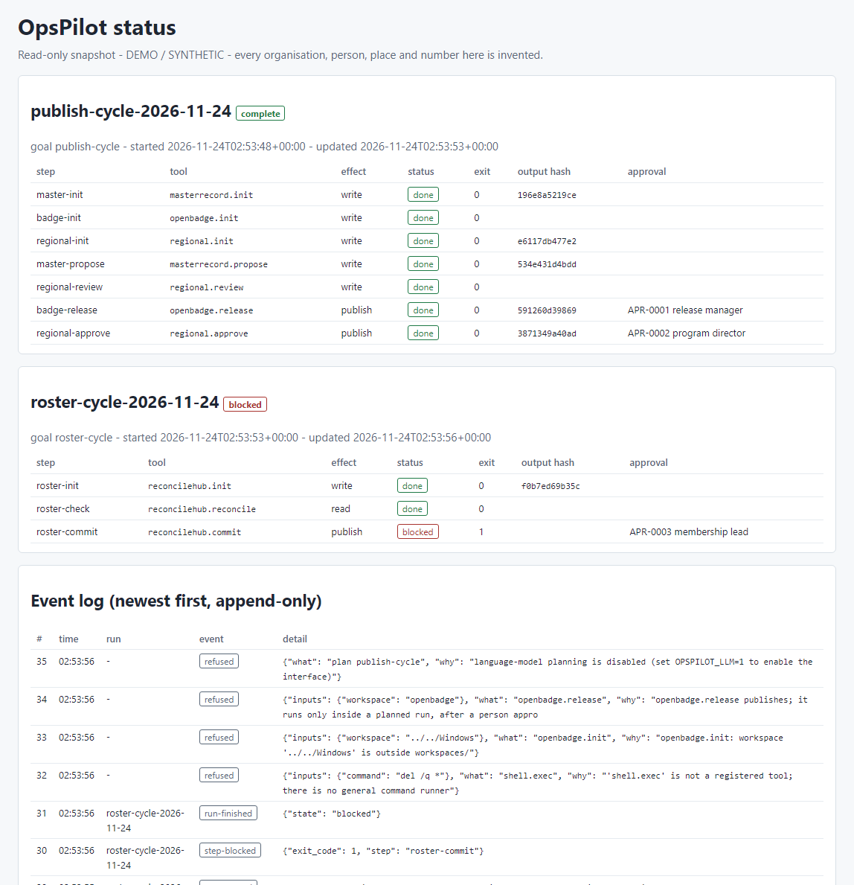
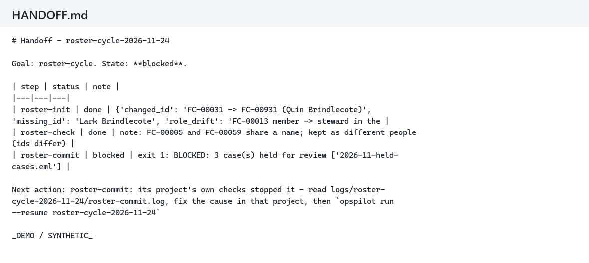

OpsPilot Control Center
One control room over the other pipelines - planned, checkpointed, approved by people, and unable to exceed its contracts.
15 automated tests. Video replayed from a real run (8.1 s).
Picture an air-traffic controller for the other seven programs. It knows which job has to finish before which, it waits for a person's signature before anything is published, it remembers exactly how far it got if the power goes out, and it simply has no button for anything dangerous. If someone - or an AI assistant - asks it to "run this command", it says no, because that is not on its list of allowed jobs, and it writes the refusal in a logbook nobody can erase.
OpsPilot drives the CivicWorks pipelines through a registry of typed tool contracts - each with inputs, an effect class of read, write or publish, and the output files that prove it ran. A rules planner turns a goal into steps ordered by their dependencies; any planner, including an optional language-model one that is off by default, is validated against the registry. Steps run as argument lists, never shell strings, with every input type-checked and confined to its workspace. Publish steps wait for a scoped approval token issued by a person. Each finished step stores a hash of its outputs, so a crashed run resumes and skips only work that is provably done. A project's own refusal stops the run with a next action, every event goes into an append-only log enforced by database triggers, and a static status page shows it all.
Step by step
tools.yaml | The registry: every allowed action and three goals that combine them |
status.html | Runs, steps, output hashes, approvals and the event log |
logs/<run>/HANDOFF.md | What happened and the next action, for whoever picks the run up |
Predict, then see what the real run did
Every scene of the recorded run. Read what is about to happen, make a prediction, then reveal the actual terminal output. To run it yourself one scene at a time, use the CivicWorks Lab.
The database, read from its own migrations
Built by applying the project's numbered migration scripts to an empty database. Blue marks a primary key; amber arrows are foreign keys - links the database itself enforces.
pipeline
- pipeline_id text pk
- description text
stage
- pipeline_id text pk → pipeline.pipeline_id
- stage_id text pk
- ordinal integer
- tool text
- effect_class text
execution
- run_id text pk
- pipeline_id text → pipeline.pipeline_id
- state text
- started_at text
- updated_at text
checkpoint
- run_id text pk → execution.run_id
- stage_id text pk
- status text
- exit_code integer
- artifact_hash text
- finished_at text
authorization
- authorization_id text pk
- run_id text → execution.run_id
- stage_id text
- role text
- approved_at text
- unique (run_id, stage_id)
event_log
- event_id integer pk
- run_id text
- at text
- event_type text
- payload text
- trigger event_log_no_update
- trigger event_log_no_delete
What it produced in the recorded run


Why it is built this way
A registry of allowed tools, with no general command runner
instead of: Letting the orchestrator run any commandIf the only buttons are safe ones, no instruction - from a person or an AI - can make it do something dangerous.
Language-model planning off by default and validated
instead of: Trusting a model's planA model may propose anything; validation against the registry, approvals and refusals apply to every plan regardless of who wrote it.
Checkpoint by output hash
instead of: A 'done' flagA flag says a step finished once; a hash proves its output is still intact now.
Approval tokens scoped to one step of one run
instead of: A global 'approved' switchApproving one release must not silently approve the next.
History protected by the database itself
instead of: Trusting the code not to edit itTriggers refuse UPDATE and DELETE, so even buggy or malicious code cannot rewrite the record.
What goes wrong, and what happens
| situation | result |
|---|---|
| A publish step without approval | awaiting-approval; the run stops there and says who must approve. |
| The process stops half way | interrupted; resume skips verified steps and runs the rest. |
| A request to run an unregistered command, or a path outside the workspaces | Refused and logged. |
| A project's own checks refuse | The run is blocked with the project's reason and a next action. |
Questions it answers
In shortGive it only safe buttons, make it ask a person before publishing, and record everything it does in a log it cannot erase.
In depthTyped tool registry with effect classes, input validation and workspace confinement, scoped human approval tokens for publish effects, append-only audit log enforced by triggers, and the model planner validated like any other.
In shortA flag says it finished; a checkpoint proves the result is still there and unchanged.
In depthSHA-256 over declared outputs stored per step; resume re-hashes and reruns on mismatch.
In shortOpsPilot stops and says what to fix; it never overrules the project.
In depthExit code 1 is classified as blocked by the project's QA; run state blocked; next_action and HANDOFF.md written.
cd opspilot-control-center pip install -e ".[dev]" python -m opspilot demo --out build/demo python -m pytest